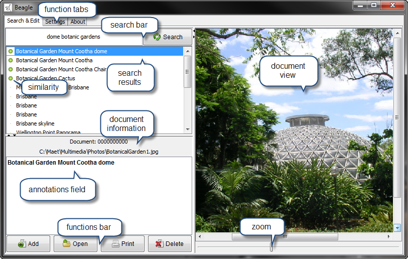
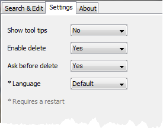
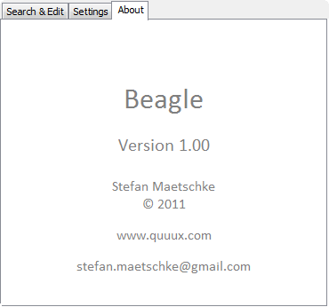

introduction
Beagle is a simple document management software originally designed to annotate and store scanned newspaper articles but is also useful to manage pictures and other files. Files that are loaded into the software can be annotated with free text and are saved in a database. Beagle has a powerful search mechanism that allows the retrieval of stored documents based on their annotation and file name. Retrieved documents are sorted due to the similarity of their annotation to the entered search terms and are displayed in a document view.
video
The following short video clip shows how to use Beagle. The video requires JavaScript to be enabled and a recent version of Adobe Flash Player.
elements
This section explains the elements of the user interface.
{kind=link}
- function tabs: The software has three main function pages that are selected via the function tabs.
- Search & Edit: The search & edit page manages the documents.
- Settings: Basic settings such as language, tool tips and other are handled on this page.
- About The about page displays version and copyright information.
- search bar: To find documents search terms are entered in the search field and the search button starts the search.
- search results: The documents found during a search are displayed in the search results field and are ranked according to the goodness of the match.
- document information: The document number the original file path are displayed in the document information bar.
- annotation field: To edit or extend the annotation of a document enter text in the annotation field.
- document view: Documents that are pictures (BMP, PNG, GIF, JPEG) are displayed in the document view. Other file types are shown as icons. Clicking on a displayed documents opens the registered application for this file type, e.g. a PDF viewer if the document is a PDF file.
- document zoom: Picture documents can be enlarged with the zoom slider.
- functions bar: The function bar contains the basic document functions.
- Add: To add documents to the database press this button. It opens a file selector dialog and copies all selected files into the database.
- Open: The open button starts the application registered for the file type of the currently displayed document and loads the document. Documents can then be edited within their native application.
- Print: The print button sends the currently displayed document to the printer.
- Delete: To remove a document from the database press this button. The button might be disabled (see Settings page)
settings
The settings page contains switches for the basic settings.
{kind=link}
- Show tool tips: Toggle the display of tool tips.
- Enable delete: Enable or disable delete button on Search & Edit page
- Ask before delete: Toggle confirmation dialog when deleting documents.
- Language: Choose the language of the user interface. This setting becomes active only after a restart.
about
The about page shows version and copyright information.
{kind=link}